Treinos de drift abertos ao público no RJ Race Park, com pista exclusiva para pilotos convidados, e escolinha com instrutor. More than drift. It's a culture.
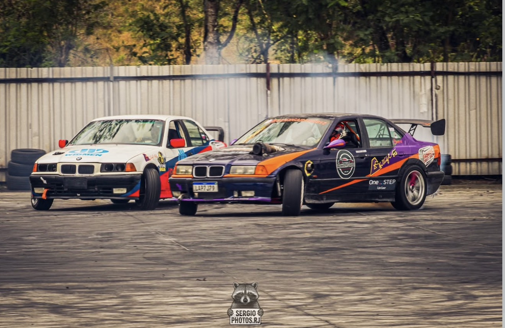
Aberto ao público, ingressos no local. Pista exclusiva para pilotos convidados. Caronas pagas.
Confirmar presença registra seu interesse. Não é ingresso, vaga garantida, inscrição de piloto nem reserva de carona.
Venda direto na portaria, no dia. Confirme seu interesse em participar do evento.
A participação na pista é exclusiva para pilotos convidados. Não há inscrição pública.
Valores e disponibilidade ainda não divulgados. Consulte a organização.
Consultar caronas →Um domingo inteiro de drift, carros e gente boa.
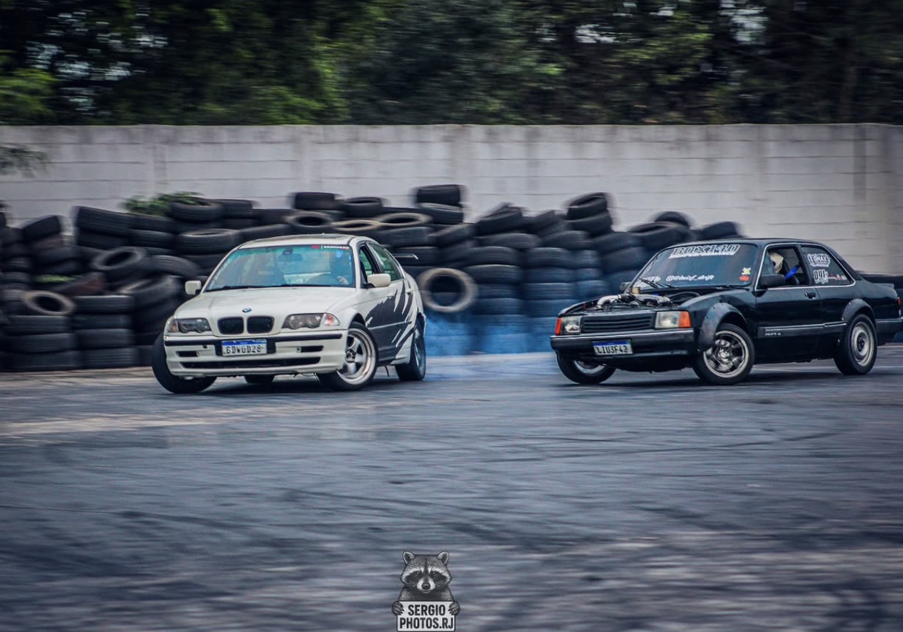
Das 9h às 18h, os pilotos da cena carioca andando da iniciação à pista completa.
De Chevette a BMW: os carros da cena de perto, no paddock e na pista.
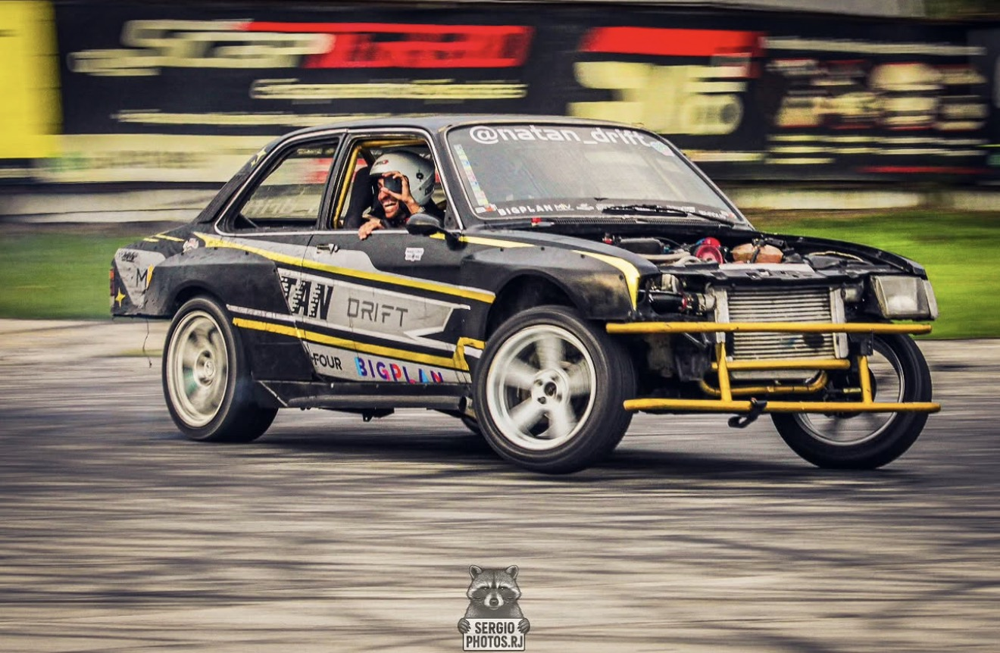
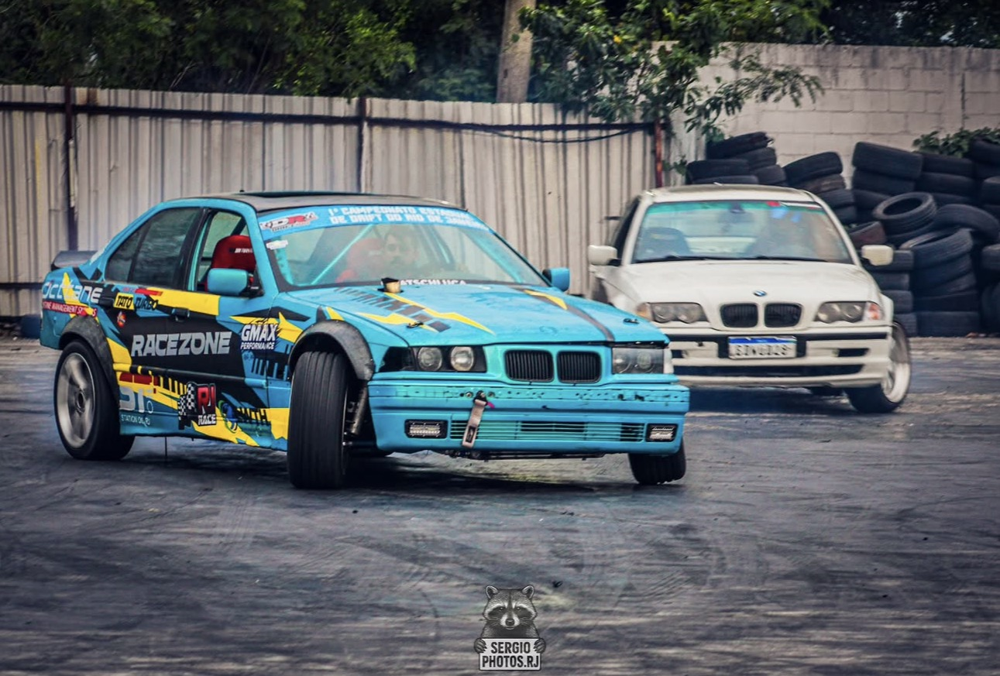
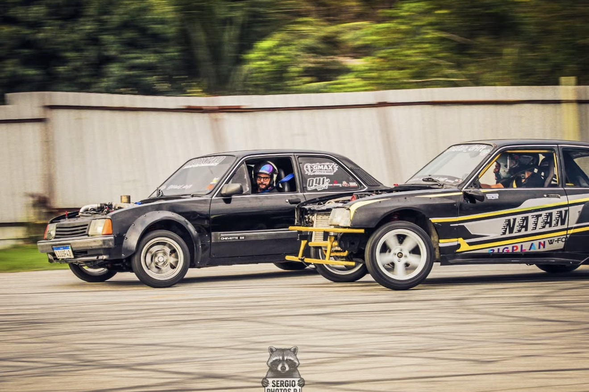
Área ao lado do estacionamento onde quem está começando anda sem pressão.
Família, amigos e quem quer assistir de perto. Traz o seu carro e troca ideia com quem vive isso.
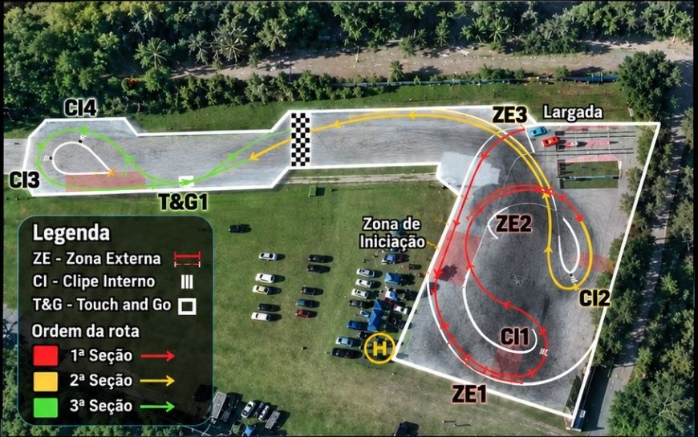
Estrada do Frutuoso, 320Santa Cruz · Rio de Janeiro
Pista, carro de drift, pneus e combustível inclusos. Você entra no carro com o instrutor do lado e evolui no seu ritmo, do zero até fechar a curva de lado.
2 horas de pista e carro · Chevette · 1 par de pneus · 10 min com instrutor no carro
8 módulos · pista, carro, 2 tanques de combustível, 2 pares de pneus novos
8 módulos · mesma estrutura, mais potência
Registros de treinos anteriores. Vídeos, bastidores e próximas datas saem primeiro no Instagram.
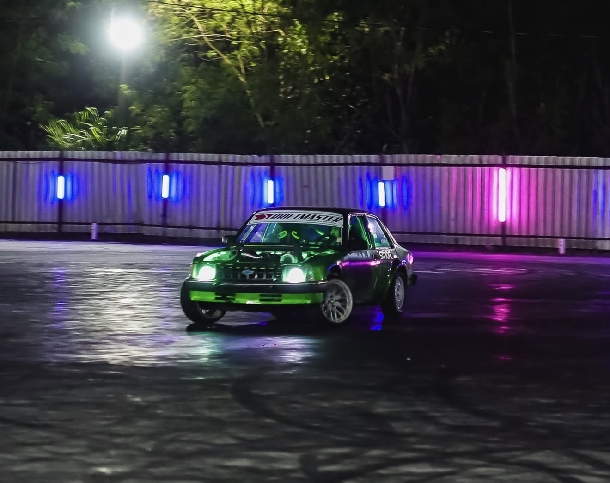
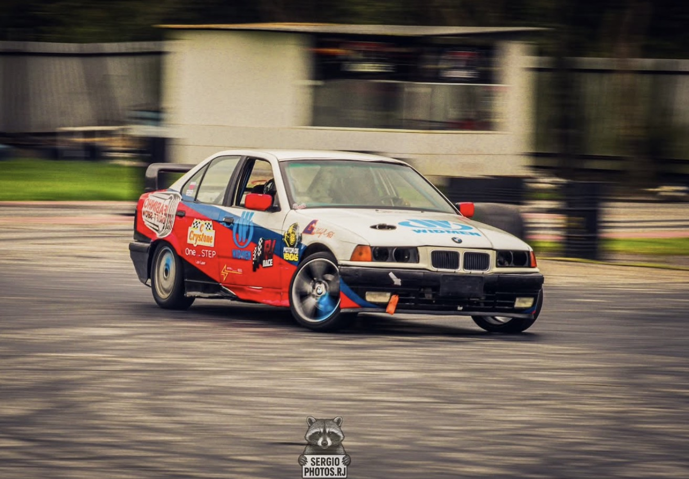
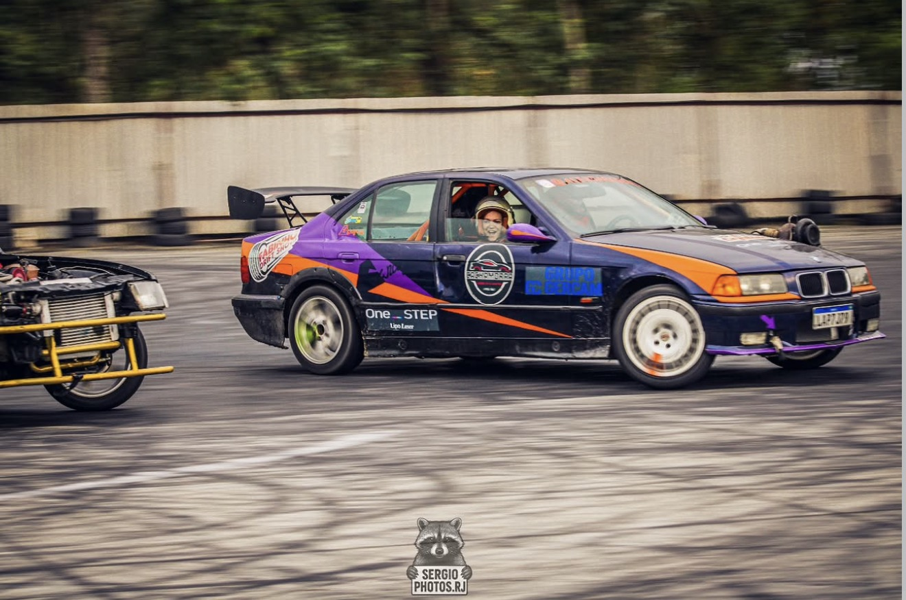
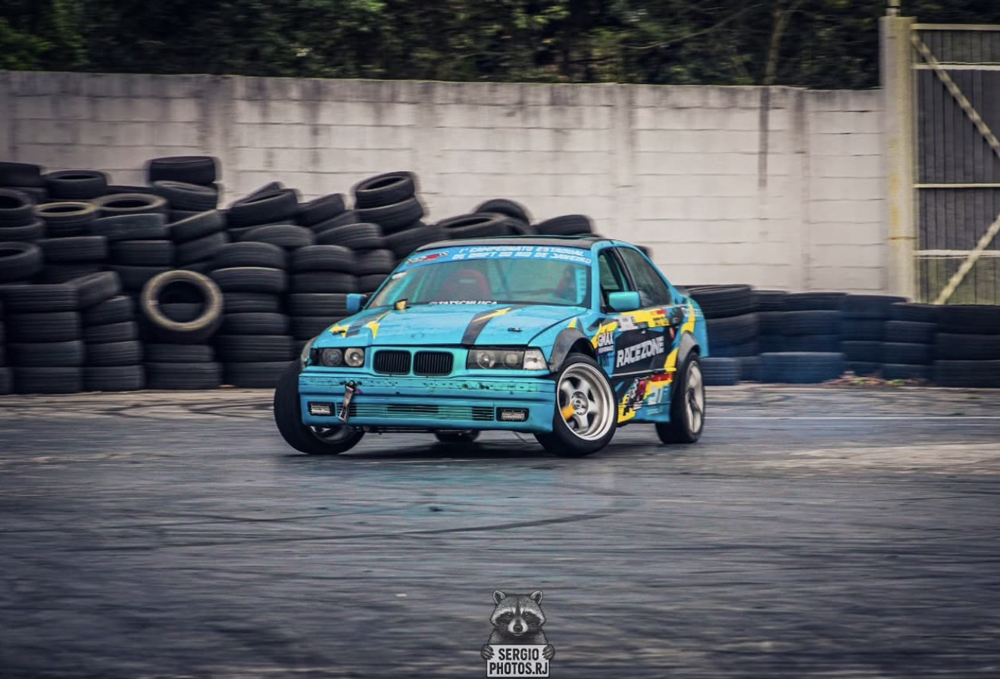
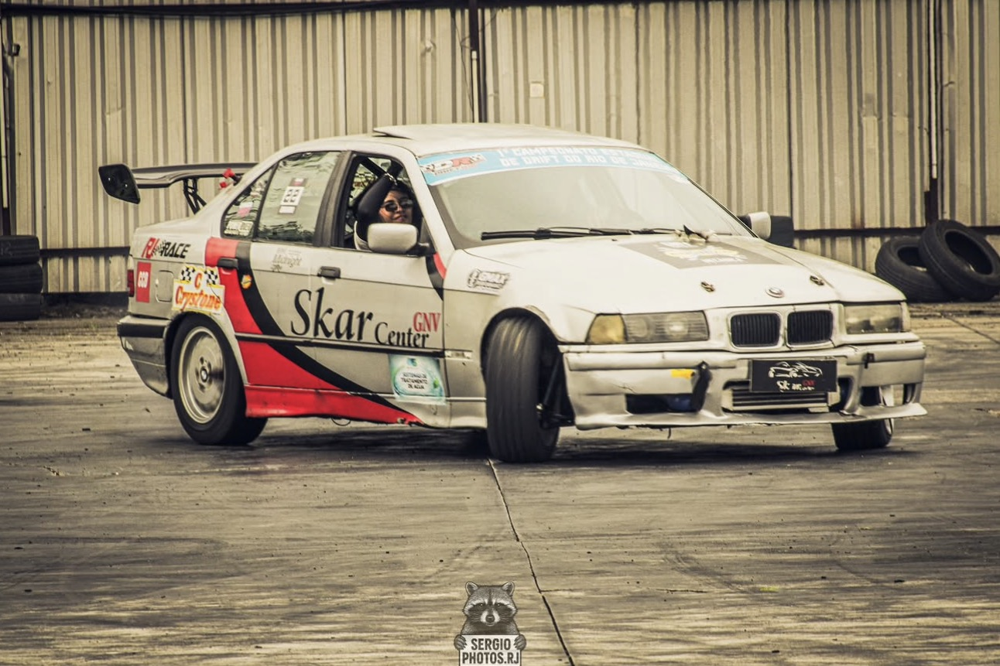